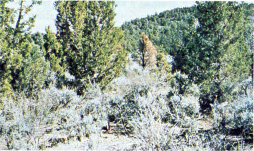
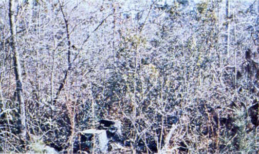
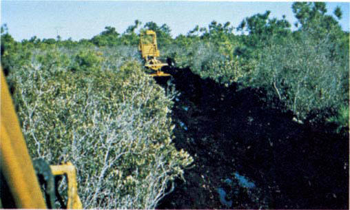
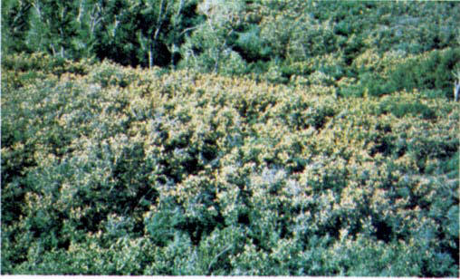

Fires carry through the shrub layer where the foliage is more flammable than fuel model 5, but this requires moderate winds, greater than 8 mi/h (13 km/h) at midflame height. Fire will drop to the ground at low wind speeds or at openings in the stand. The shrubs are older, but not as tall as shrub types of model 4, nor do they contain as much fuel as model 4. A broad range of shrub conditions is covered by this model. Fuel situations to be considered include intermediate stands of chamise, chaparral, oak brush, low pocosin, Alaskan spruce taiga, and shrub tundra. Even hardwood slash that has cured can be considered. Pinyon-juniper shrublands may be represented but may overpredict rate of spread except at high winds, like 20 mi/h (32 km/h) at the 20-foot level. Photographs 15, 16, 17, and 18 show situations encompassed by this fuel model.

Photo 15. Pinion-juniper with sagebrush near Ely, Nev.; understory
mainly sage with some grass intermixed.

Photo 16. Southern harwood shrub with pine slash residues.

Photo 17. Low pocosin shrub field in the south.

Photo 18. Frost-killed Gambel Oak foliage, less than 4 feet in
height, in Colorado.